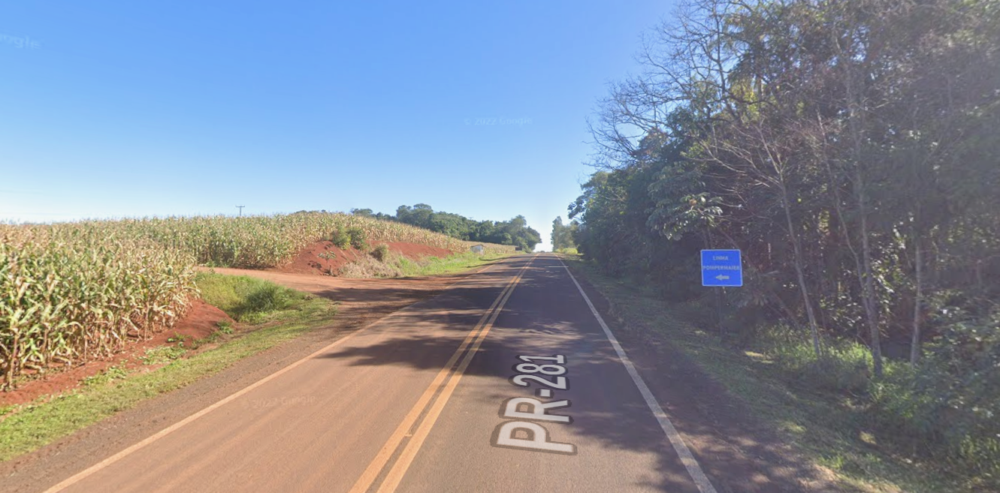

Sobre Santa Clara, Linha Pompermaier
Santa Clara, Linha Pompermaier
sla
Onde Encontrar
a localização de "Santa Clara, Linha Pompermaier"
- Localização:Interior de Capanema Paraná.
- Como Chegar em Santa Clara: O ideal é pegar a estrada principal que liga Capanema às regiões próximas. Se você estiver vindo de Capanema, pode seguir pela rodovia que leva até Santa Clara, geralmente seguindo as placas de sinalização local. Recomendo usar um aplicativo de mapas, como o Google Maps, para obter a rota mais precisa e atualizada, considerando o trânsito e as condições da estrada.
Santa Clara
allowfullscreen="vila.png"
loading="lazy"
referrerpolicy="no-referrer-when-downgrade">
Linha Pompermaier

allowfullscreen=""
loading="lazy"
referrerpolicy="no-referrer-when-downgrade">
Minha Casa
allowfullscreen=""
loading="lazy"
referrerpolicy="no-referrer-when-downgrade">